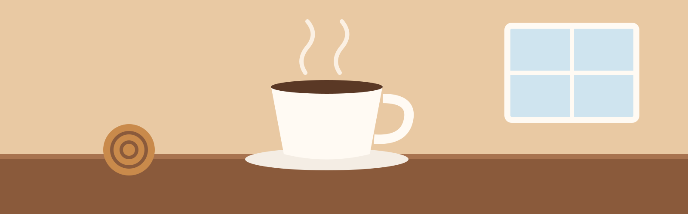

Kaffe og te
Filterkaffe, cappuccino, kakao og mange slags te. Påfyll er gratis.

Den lille kafeen på hjørnet. Vi baker alt selv, hver morgen, og kaffen er alltid nytraktet. Ta med en venn, en bok eller lekseboka.
Se hva vi servererHar du bursdag? Da baker vi kake til deg! Spør i kassa.
Filterkaffe, cappuccino, kakao og mange slags te. Påfyll er gratis.
Kanelboller, croissanter og dagens kake. Kommer ut av ovnen klokka åtte.
Dagens suppe med hjemmebakt brød, fra klokka elleve til to.